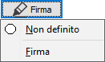
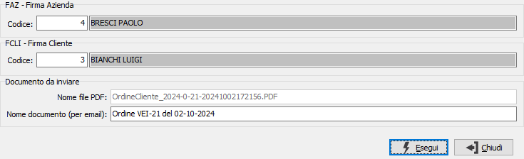
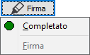

Firma documenti
Il pulsante consente di effettuare la firma remota o di controllare lo stato di firma del documento.

Dopo aver inserito un nuovo documento lo stato, premendo il pulsante, appare come "Non definito" indicato da un cerchietto bianco; in queste condizioni è attiva la scelta Firma con cui si accede alla finestra seguente dopo che è stata effettuata la generazione del pdf relativo alla stampa; se è attiva l'opzione di richiesta dei parametri di stampa questi compariranno a video prima di effettuare la generazione.
La finestra, propone in base al template configurato il numero dei firmatari e riporta già compilati i campi del firmatario aziendale e del firmatario del cliente se assegnati; mostra il nome del file ed il nome del documento che comparirà nella email inviata ai firmatari in base a quanto configurato per il tipo di documento. La pressione sul pulsante Esegui avvia il processo di firma e lo stato sarà modificato in "In attesa di firma" indicato da un cerchietto giallo.

Dopo che saranno effettuati i vari passaggi relativi alla firma lo stato del documento potrebbe diventare:
Rifiutato indicato da un cerchietto rosso in caso il processo di firma non sia andato a buon fine ed i firmatari abbiano rifiutato la firma
Completato indicato da un cerchietto verde se tutti i firmatari hanno completato il processo di firma correttamente

Lo stato "Completato" termina il procedimento di firma, negli altri casi è possibile ripetere le operazioni di firma.
E' possibile analizzare lo stato di firma dei vari documenti e scaricare i documenti firmati tramite la procedura Analisi documenti firmati.